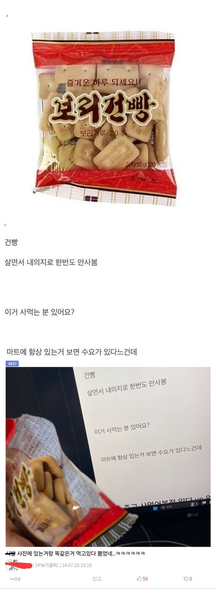

"도대체 이런 걸 누가 마트에서 사먹는 거임?"
댓글
저거 개별포장도 존나싸서 아침 운동갈때 하나챙겨가면 좋음 ㅋㅋ맛있음
거래처 사장님도 10개챙드리면 좋아라함 ㅋㅋ
교회 전도하시는 분들이 저걸 주는데 사람들이 많이 버리고감
현실에 찌들어 군대가 가끔 그리워질때
종종 사서
우유에 말아먹곤함
별사탕이 없는게 아쉬울뿐
건빵, 전투식량,군대리아 얌이
군용은 진짜 빵같은 맛이 나는데 저런건 과자같아서 싫음
물 끓여서 건빵 넣고 별사탕 넣어서 죽으로 만들어 먹어봐.
별사탕 없으면 설탕. 설탕 안 먹으면 스테비아 넣고.
그럼 끓일 때 뽀글뽀글 소리가 나서 그걸 뽀글이라고 했음.
요즘은 번개 라면을 뽀글이라고 하는데, 라테는 그렇게 불렀음.
나도
내돈으로 사먹어본적 없는데
어떻게 구해지면 차마실때나 커피 마실때 나쁘지 않은거 같아
집앞 교회에서 나눠줌
나도 종종 사먹는데..
종종사먹음 나름맛남
건빵 가끔 먹으면 맛있음
보리가루 2% 넣고 보리건빵 ㅠ
중량/부피 대비 열량, 보관성, 등등.. 이만한 사료가 없단말이야
건빵 의외로 고소한맛이 일품이란말이야..
이상하게도 건빵의 기원이 하드택이라는 걸 알고 나서 더 생각이 남...
큰집가면 맨날있음 ㅋㅋ
청우 건빵 존맛임 역시 믿고 먹는 청우
저거 고딩때 매점에서 사먹었는데 싸고 양많아서
난 보급건빵 좋아했어서 가끔 먹는디...
개독교회 홍보 하면서 엄청 쪼그만팩하나 주더라 어휴 누굴 거지로 아나? 이러면서 버럴려다가 하나 먹어보고 다먹음 ㅋ
난 건빵 자주먹는데
쌀건빵이 맛있어
꽤나 잘 팔림
저게 주기적으로, 대량으로 먹을껀 아닌데, 어쩌다 생겨서 한두개 주워먹다보면 한봉지 뚝딱임
가끔 건푸레이크해먹는데 하이바없어서 불편함
하이바로 별사탕 가루내야되는데 대체품이 없음
숟가락으로 쌔게 탕탕 치면 되는데
부대에서도 훈련아닐땐 그렇게 해서 먹었었음
벌크업 용으로 저만한게 없음
저거 3봉지에 천원했었어서 고딩때 배고플때 두봉지까지 뜯자마자 다뺏기고 애들 배부를때 마지막 한봉지 딱 먹으면 배고프지않았었음
건빵은 좀 맛 대비 건강에 안좋은게 비율이 망가져있단 인식임
난 저거 사서 튀겨먹긴 함... 튀겨져 있는건 맛이 좀 뭔가뭔가 해서
내가 튀겨서 먹음 뜨거울때 설탕 살짝 뿌리고 잠깐 뒀다가 소금 조금 뿌려먹으면 존맛임
가끔 손님들 서비스 주면 좋아함
우유나 믹스커피에 부숴서 시리얼 처럼 먹어도 맛있음
군대리아가 가끔 그립다 ㅋㅋ
그 말도 안되는 햄버거 빵에 가운데 구멍 뚫고
잼을 골고루 발라 우유에 버무리면 극락이었는데...
내 군생활을 버티게 해주던 마약이었음
수요가 없으면 팔겠냐고 ㅋㅋ
댓글 영감님들 맛있다고 칭찬하는거 개웃기네 ㅋㅋ
여기는 마이너한거 나오면 다 맛있다고 하더라 ㅋ
보리건빵존나맛있어
이거 개들 간식으로 하나씩던져주면 개잘먹음
군대를 갔다온 대한민국 남성들의 습관
이미트편의점에서 파는 건삥이
가성비 조땜 ㄹㅇ
나요
심심해서 만든 생존배낭에 있긴한디
사진않는데 있으면 먹게됨 ㅋㅋㅋㅋㅋ
저거사먹을 돈으로 조금 더주고 맛있는 과자를 먹어야지!
내 돈으로 사먹은 적 없긴 함ㅋㅋㅋ
나 어제 마트에서 딱 저거 똑같은 거 삼 ㅋㅋ
저거 대량으로사면 한봉에 150원꼴이라 가성비좋음ㅋㅋ
우리 집에도 있음. 근데 내가 산게 아님